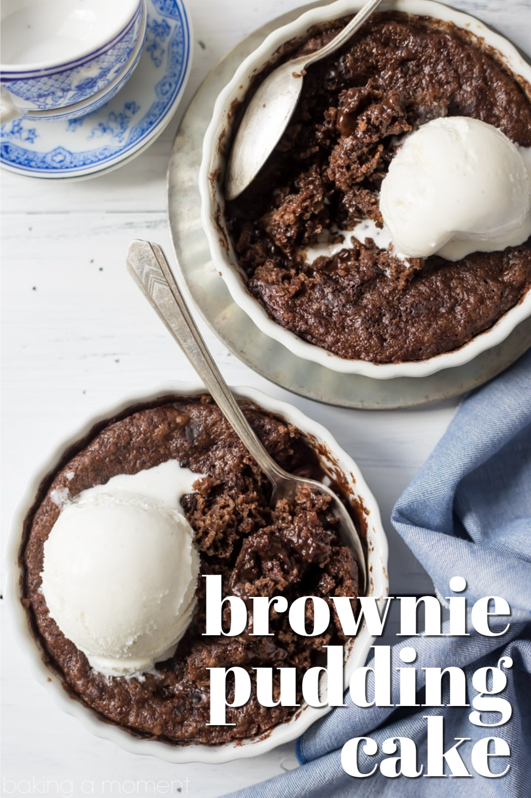

Pastries refer to a category of baked goods that are typically sweet and flaky. They are made from a combination of flour, butter, and sometimes eggs, sugar, or other flavorings. Pastries encompass a range of treats like croissants, danishes, pies, and tarts, often filled with fruit, cream, or savory ingredients, providing a delightful indulgence for breakfast or dessert.
Cakes are delicious baked desserts typically made with a combination of flour, sugar, eggs, and fat. They come in various flavors and shapes, often layered with frosting or filled with creams, fruits, or nuts, making them a popular choice for celebratory occasions.
Breads are staple food items made by mixing flour, water, yeast, and sometimes other ingredients like salt or sugar. They are typically baked until golden brown and have a wide variety of types and textures, including loaves, rolls, baguettes, and flatbreads, serving as versatile options for sandwiches, toasts, or accompaniments to meals.